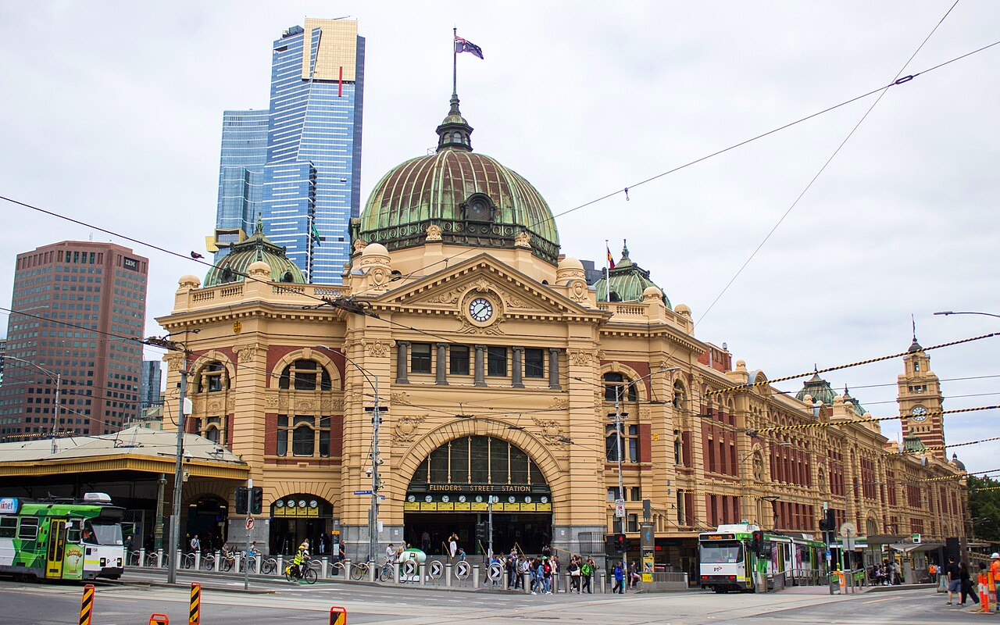
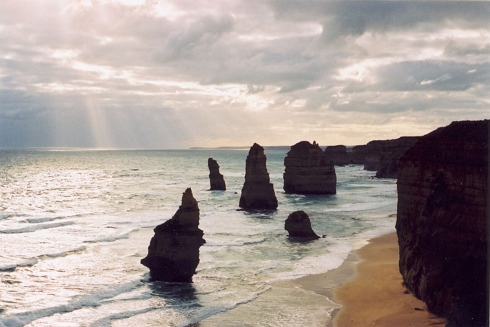

FIT2179 Data Visualisation 2
Exploring where the network reaches, who depends on it most, which communities are underserved, how patronage has shifted, and whether tourists can travel Victoria by rail.
Section 01
Victoria's public transport network spans train, tram, bus, and regional coach services — but stops are overwhelmingly concentrated in metropolitan Melbourne.
This dot map places every public transport stop across Victoria. It shows a statewide network footprint, while the densest concentration is clearly around Melbourne.
This zoomed dot map separates the Melbourne cluster from the state map. It shows train, tram, and bus stops packed tightly through the inner metropolitan area.
Source: Transport Victoria Open Data - GTFS Schedule; ABS ASGS LGA boundaries 2021.
Waffle chart: 100 equal-sized cells show the approximate percentage of stops belonging to each transport mode group.
Source: Transport Victoria Open Data, 2024

The state map establishes the spatial pattern first. The composition view then changes the task from geography to part-to-whole comparison.
Section 02
Travel behaviour varies by trip purpose, age group, and income. Data from the Victorian Integrated Survey of Travel and Activity (VISTA) reveals which groups depend most on public transport.
Heat map: rows encode trip purposes, columns encode mode groups, and colour luminance encodes trip share percentage.
Source: VISTA, Department of Transport and Planning, 2024
100% stacked bar chart: each age group is normalised to 100%, and segment length shows each mode's share.
Source: VISTA, 2024
Lollipop chart: each income band is ordered vertically, while the stem and endpoint show public transport trip share on a common horizontal scale.
Source: VISTA, 2024
Together, these three charts reveal that public transport dependence is not uniform. Younger travellers and lower-income households rely on public transport more heavily, while commuting and education trips dominate mode choice far more than shopping or social travel.
Section 03
Because most Victorians live in metropolitan Melbourne, this section focuses on stop coverage within Greater Melbourne LGAs. Stop density is used as a network coverage measure: it shows where stops are spatially concentrated, but it does not directly measure service frequency or demand.
Choropleth map: use the mode selector to compare total, bus, train, tram, or regional stop density. Hover for details, click an LGA to keep it highlighted, and double-click to clear the selection.
Source: Transport Victoria Open Data; ABS LGA boundaries 2021
Histogram: LGAs are grouped into 5-stop density intervals to show the distribution of coverage, with labels showing bin counts and a dashed reference line marking the median LGA.
Source: Derived from Transport Victoria Open Data and ABS LGA boundaries 2021
Inner LGAs such as Yarra, Melbourne, Stonnington and Port Phillip show the densest stop coverage because many tram, train and bus stops are packed into small land areas. The histogram complements the choropleth by showing the overall distribution, rather than repeating an ordered list of high and low LGAs.
Section 04
Patronage data shows how public transport demand changed after major disruptions and how weekday travel still differs from weekend travel. This section uses time as the main structure, so the chart choices follow the course-note distinction between ordered trends and categorical comparison.
Line chart: month is an ordered temporal attribute, vertical position encodes monthly patronage, and hue separates transport modes.
Source: Department of Transport and Planning Victoria, monthly public transport patronage by mode
Slope graph: each line links one mode's 2025 average weekday patronage to its weekend patronage on the same quantitative scale.
Source: Department of Transport and Planning Victoria, 2025 average daily patronage
The line chart supports trend reading: the same modes are tracked across monthly time points, making drops and recovery patterns visible. Metropolitan train, tram, and bus remain the largest modes, while regional train is shown as a smaller but distinct series.
Section 05
To extend the transport story beyond commuting, this section examines whether Victoria's tourism regions are well connected to the regional rail network and how overnight tourism demand has changed over time.
Ranked bar chart: each bar is one tourism region, ordered by distance to the nearest regional train station.
Source: Derived from tourism region centres and regional train stops.

The ranked bar chart uses length and position to compare access difficulty. It makes the longest last-mile gaps stand out without another map.
Bubble plot: horizontal position shows distance to the nearest regional train station, vertical position shows how many regional train stations sit within 50 km, and bubble size shows how many sit within 100 km.
Source: Derived from tourism region centres and regional train stops.
Stacked area chart: visitor trips are grouped into intrastate overnight, interstate overnight, and international overnight segments from 2020 to 2025.
Source: Victorian Tourism Statistics, year ending December 2025.
{kind=link}
{kind=link}